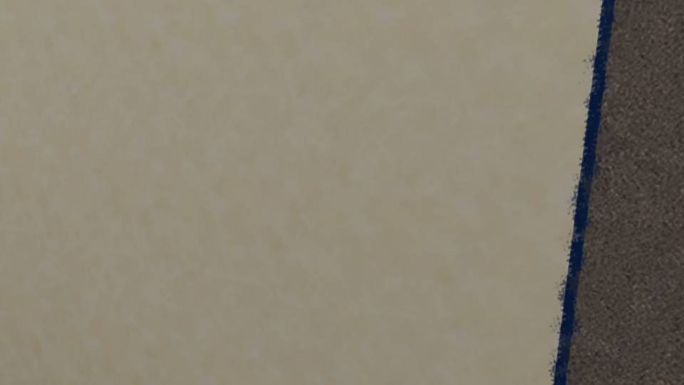

Script 00001835


"Morning, Haruka!"
"Natsumi? What's up? This early in the morning."
"Mom asked me to give something to Auntie. Is she home?"
"Yeah, she's here. I'll give it to her."
"Ah, no, she said she wants it handed to Auntie directly."
"That so? She was up late last night, so she just woke up, but I'll go get her."
"Natsumi? What's up? This early in the morning."
"Mom asked me to give something to Auntie. Is she home?"
"Yeah, she's here. I'll give it to her."
"Ah, no, she said she wants it handed to Auntie directly."
"That so? She was up late last night, so she just woke up, but I'll go get her."
"Up late last night...? Did she stay up too late?"
"Coming..."
"Morning, Auntie! Wait, why are you peeking out through the gap in the door like that..."
"I don't have my makeup on..."
"I-I see... hahaha. Oh, here, this is from Mom. She made too much simmered stew, so she's sharing some."
"Oh my, thank you."
"Morning, Auntie! Wait, why are you peeking out through the gap in the door like that..."
"I don't have my makeup on..."
"I-I see... hahaha. Oh, here, this is from Mom. She made too much simmered stew, so she's sharing some."
"Oh my, thank you."
"............"
"So, what do you want?"
"Huh?"
"So, what do you want?"
"Huh?"
"If that was all, you could have just given it to Haruka, right?
You went out of your way to call me, so there must be something else, isn't there?"
"You're sharp, Auntie... Actually, it's about Haruka..."
"What is it?"
"It's kind of hard to say... The day before yesterday and yesterday, I ran into Haruka on my way home from school. She said she was on her way back from the hospital."
"You're sharp, Auntie... Actually, it's about Haruka..."
"What is it?"
"It's kind of hard to say... The day before yesterday and yesterday, I ran into Haruka on my way home from school. She said she was on her way back from the hospital."
"............"
"But she seems fine, and she won't tell me anything... So I got a little worried..."
"............"
"So, um... I was wondering if you could tell me..."
"I'm glad you're worried about her. But sneaking over here to ask about something Haruka doesn't want to talk about isn't very admirable, is it?"
"Ugh..."
"But she seems fine, and she won't tell me anything... So I got a little worried..."
"............"
"So, um... I was wondering if you could tell me..."
"I'm glad you're worried about her. But sneaking over here to ask about something Haruka doesn't want to talk about isn't very admirable, is it?"
"Ugh..."
"I understand how you feel, but as long as Haruka doesn't want to talk about it, I can't tell you either."
"Ugh... But I'm worried... Um... It's not something weird, right...?"
"Something weird?"
"Ah, no, never mind..."
"Ugh... But I'm worried... Um... It's not something weird, right...?"
"Something weird?"
"Ah, no, never mind..."
"Hehehe, don't worry. It's nothing that's going to change her life.
Haruka just has a little problem.
A delicate problem that's hard to talk about even with Natsumi-chan."
"A problem, huh..."
"So what Natsumi-chan can do is treat Haruka the same as always. Beyond that, please wait, without rushing her, until Haruka wants to talk about it."
"Okay... Sorry for coming so early in the morning."
"A problem, huh..."
"So what Natsumi-chan can do is treat Haruka the same as always. Beyond that, please wait, without rushing her, until Haruka wants to talk about it."
"Okay... Sorry for coming so early in the morning."
"I'm sorry too. That girl's already 16, so I can't go blabbing about her.
Tell Akane thanks for me."
"Okay."
"Okay."

"Auntie's energy is really low without makeup, huh..."
"Did you say something?"
"N-no, nothing!"
"N-no, nothing!"